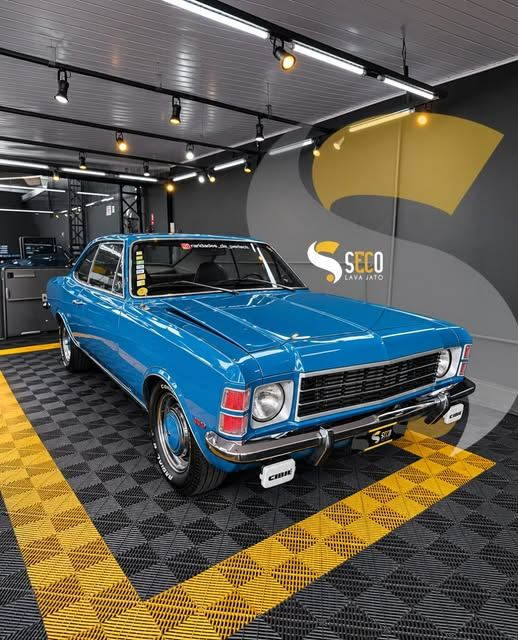
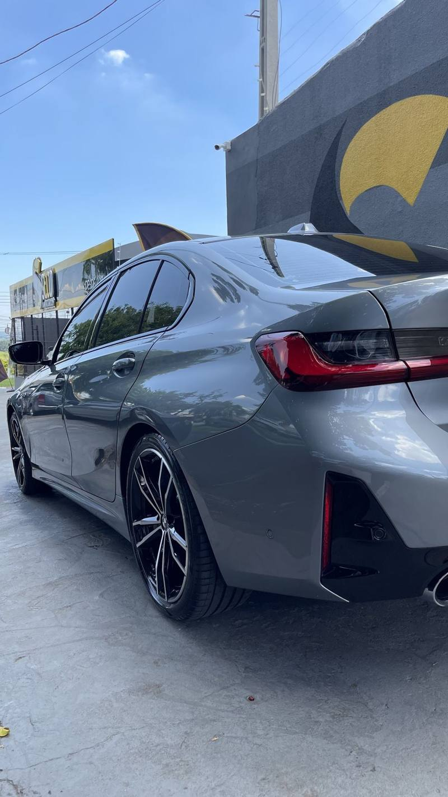
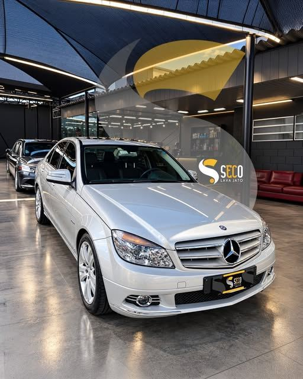
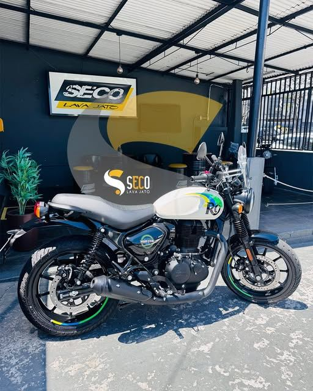
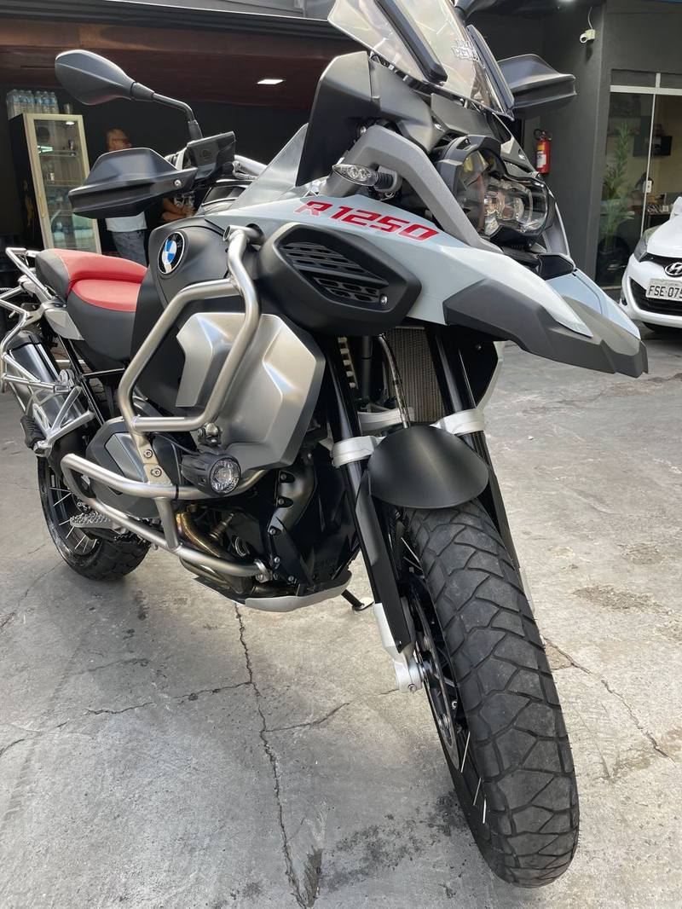
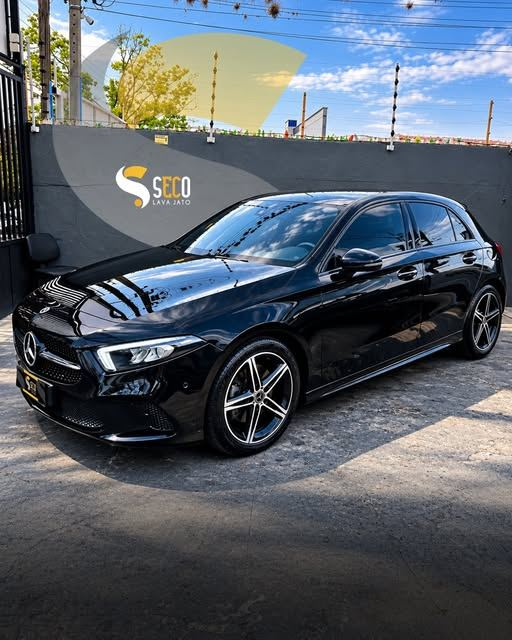
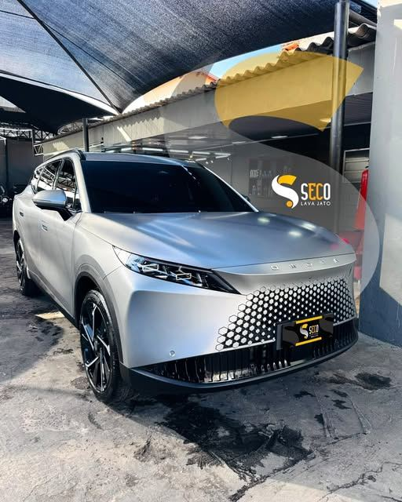
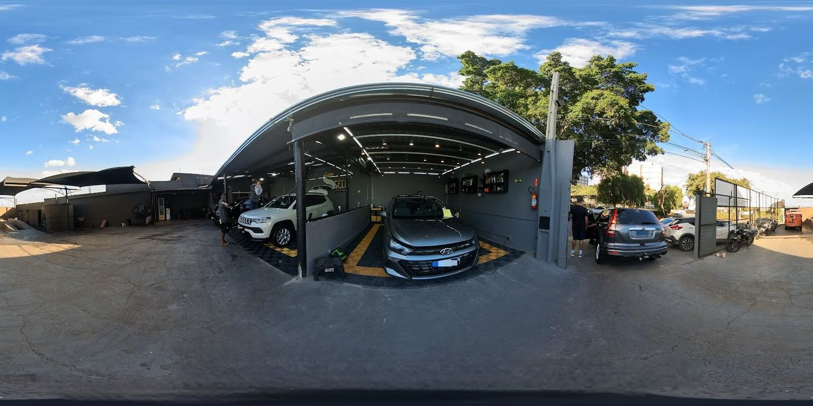

Lavagem completa
Por fora e por dentro, com capricho em cada detalhe. O carro sai “zero”, como dizem os clientes.

Estética automotiva no Jardim Nova Europa: lavagem completa, polimento, vitrificação, PPF e insulfilme. Do clássico ao zero quilômetro, de carro a moto.
Por fora e por dentro, com capricho em cada detalhe. O carro sai “zero”, como dizem os clientes.
Remove riscos superficiais e devolve a profundidade e o brilho da pintura.
Coating cerâmico que protege a pintura, realça o brilho e facilita as próximas lavagens.
Película transparente que protege contra riscos, pedriscos e pequenas batidas.
Conforto térmico, privacidade e acabamento bonito nos vidros.
Aqueles detalhes que incomodam, resolvidos sem precisar de funilaria.
As duas protegem a pintura, mas de jeitos diferentes. Veja qual combina com o seu uso.
| Comparando | Vitrificação | PPF |
|---|---|---|
| O que é | Uma camada cerâmica aplicada sobre o verniz. | Uma película transparente e resistente colada na pintura. |
| Protege contra | Sol, sujeira, chuva ácida e manchas do dia a dia. | Riscos, pedriscos e pequenos impactos. |
| Visual | Brilho intenso e efeito “molhado”. | Quase invisível, mantém a pintura original. |
| Ideal para | Quem quer brilho e lavagem mais fácil. | Carro novo, de estrada ou de colecionador. |
Na dúvida, dá para combinar os dois. A equipe do Seco avalia o carro e indica o melhor caminho.







Estrutura coberta, iluminação para enxergar cada detalhe da pintura e o piso quadriculado que virou a marca das fotos do Seco.
O melhor lugar que já fiz serviço de limpeza em carro em toda a minha vida!Resumo · Google
Atendimento diferenciado e caprichado. Meu carro ficou zero!Cliente · Google
Profissionais que fazem com muito capricho. Sou cliente há muito tempo, serviço top de alta qualidade.Emerson · Google
| Segunda a sexta | 8h às 18h |
| Sábado | 8h às 15h |
| Domingo | Fechado |
Av. Ralfo Leite de Barros, 19
Jardim Nova Europa, Campinas (SP) · (19) 97408-5903